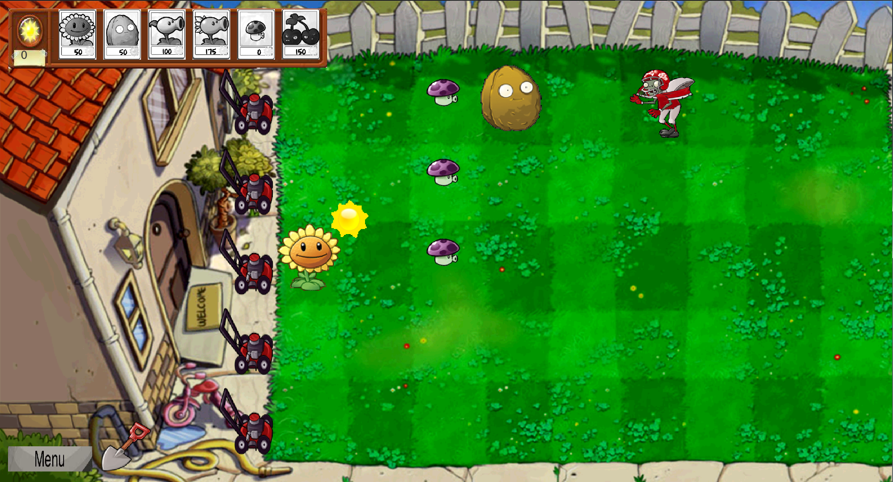
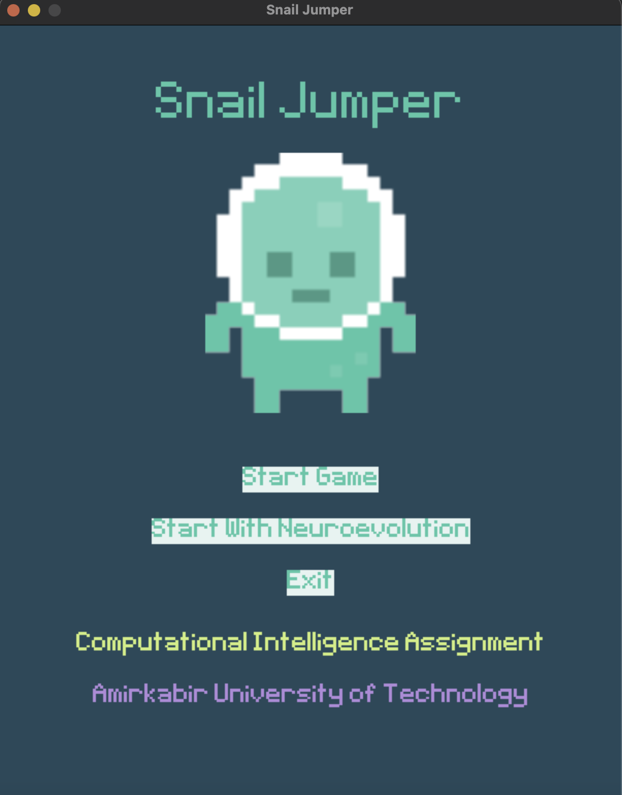
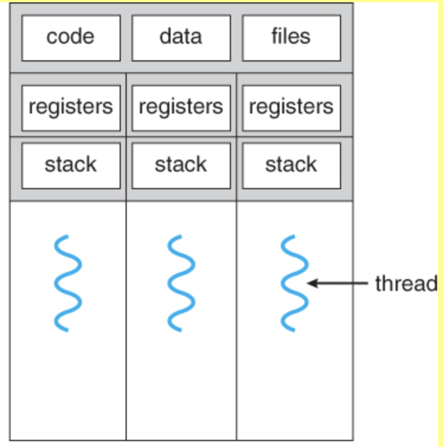
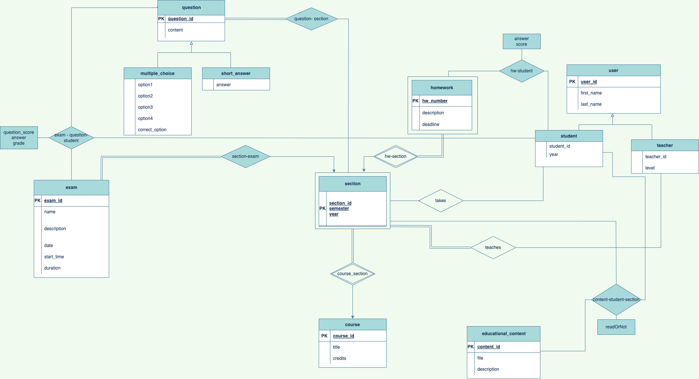

CoDet
Implementation of an app-based COVID-19 detection system for CXR images and CT
scans using VGG16, VGG19, ResNet50 and InceptionV3 models.
For more information, Visit this repository. |

Pac-Man
Implementation of search algorithms, multiagent minimax and expectimax algorithms, alpha-beta pruning, model-based and model-free reinforcement learning algorithms in the Pacman game.
For more information, Visit this repository. |

Plants Vs. Zombies
This project is an implementation of an OG game, Plants Vs Zombies, using java swing.
For more information, Visit this repository. |
|

Snail Jumper
Implementation of evolutionary algorithms in a game.
This project aims to use the evolutionary algorithm for training a neural network in an environment where there is not enough data to train the network. For more information, Visit this repository. |

Thread XV6
This project is an implementation of the kernel thread for XV6. With these threads, you can run more than one process simultaneously. There is an apparent difference between single-thread and multi-thread programs.
For more information, Visit this repository. |

E-learning-Database
Implementation of a database for a university E-learning management system. The purpose of this project is to design a database using an entity-relation model, implement the relationships between entities, and a interface for the system.
For more information, Visit this repository. |